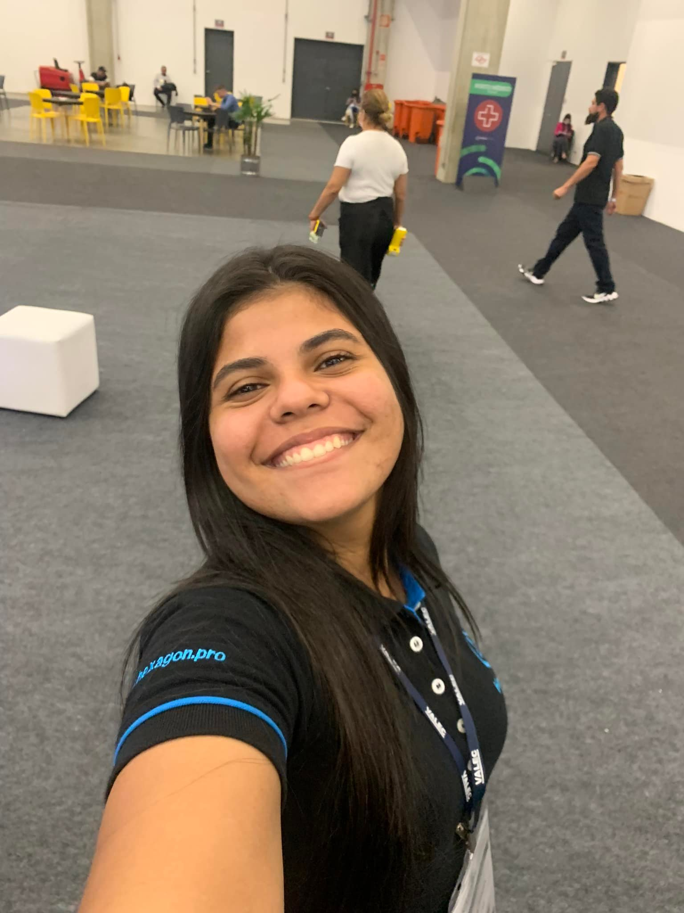

Barbara Hellen

Formada pela insituição de ensino ETEC Doutora Ruth Cardoso, nos técnicos de Informática e Desenvolvimento de Sistemas. Atualmente trabalha como Desenvolvedora Front-End Júnior, utilizando ReactJS, mas já trabalhou com Angular, .Net core e PHP. Cursa o 1° Ciclo de Sistemas para Internet na FATEC.
Gosta de desafios e sempre procura estudar o que há de novo no mercado. Sua busca por conhecimento conta sempre com muita alegria, resiliência e café.